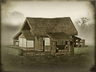
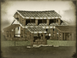

Requires
- Buildings: 
Enables
- Buildings: 
Basic Building Statistics (can be modified by difficulty level, arts, skills, traits and retainers)
- Cost: 3400
- +900 to wealth generated by farms in this province
- +1 per turn to town growth from industrial buildings within this province
Description
Money can grow on trees, sometimes.
Tenant fields provide farming income, and help industry grow by providing food for the factory workers. Tenant farmers do not work solely for themselves and their village. Instead, they pay rent on their lands, and this means that they become part of the larger, cash economy of the land. This may sound trivial, but it is important because it boosts trade activity, and gives common people a way of accumulating wealth. A subsistence farmer can never be "wealthier" than having too much food to eat; a man who sells his goods can accumulate a surplus of wealth over many harvests, and use it as he wishes. His worth is separate from his labours, and can grow independently.